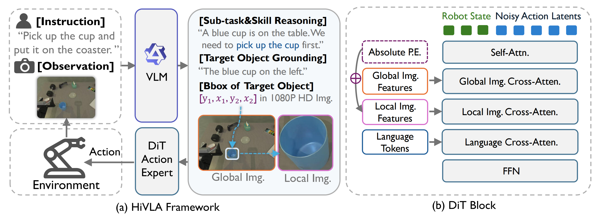

While end-to-end Vision-Language-Action (VLA) models offer a promising paradigm for robotic manipulation, fine-tuning them on narrow control data often compromises the profound reasoning capabilities inherited from their base Vision-Language Models (VLMs). To resolve this fundamental trade-off, we propose HiVLA, a visual-grounded-centric hierarchical framework that explicitly decouples high-level semantic planning from low-level motor control. In high-level part, a VLM planner first performs task decomposition and visual grounding to generate structured plans, comprising a subtask instruction and a precise target bounding box. Then, to translate this plan into physical actions, we introduce a flow-matching Diffusion Transformer (DiT) action expert in low-level part equipped with a novel cascaded cross-attention mechanism. This design sequentially fuses global context, high-resolution object-centric crops and skill semantics, enabling the DiT to focus purely on robust execution. Our decoupled architecture preserves the VLM's zero-shot reasoning while allowing independent improvement of both components. Extensive experiments in simulation and the real world demonstrate that HiVLA significantly outperforms state-of-the-art end-to-end baselines, particularly excelling in long-horizon skill composition and the fine-grained manipulation of small objects in cluttered scenes.

| Task | π0 | π0.5 | StarVLA | H-RDT | Oursw/o Skill | Ours |
|---|---|---|---|---|---|---|
| Easy Tasks | ||||||
| Click Bell | 45% | 65% | 71% | 88% | 95% | 94% |
| Click Clock | 53% | 66% | 83% | 93% | 97% | 97% |
| Press Stapler | 60% | 69% | 63% | 89% | 98% | 97% |
| Lift Pot | 59% | 21% | 18% | 92% | 96% | 96% |
| Average | 54.3% | 55.3% | 58.8% | 90.5% | 96.5% | 96.0% |
| Hard Tasks | ||||||
| Place Shoe | 75% | 68% | 61% | 88% | 94% | 95% |
| Move Stapler | 15% | 17% | 15% | 34% | 42% | 60% |
| Stamp Seal | 61% | 42% | 25% | 43% | 68% | 76% |
| Stack 3 Blocks | 1% | 1% | 16% | 20% | 26% | 37% |
| Click 3 Bells | 41% | 54% | 66% | 88% | 92% | 98% |
| Average | 38.6% | 36.4% | 36.6% | 54.6% | 64.4% | 73.2% |
| Total Average | 45.6% | 44.8% | 46.4% | 70.6% | 78.7% | 83.3% |
Main success rates across 9 tasks in the RoboTwin simulator. HiVLA demonstrates superior performance, particularly in long-horizon and visually demanding tasks. Best and second-best results are bold and underlined.
BibTex Code Here